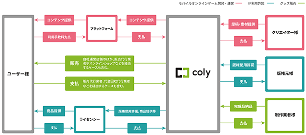

(注) １．当社は連結財務諸表を作成しておりませんので、連結会計年度に係る主要な経営指標等の推移については記載しておりません。
２．「収益認識に関する会計基準」（企業会計基準第29号 2020年３月31日）等を第９期の期首から適用しており、第９期及び第10期に係る主要な経営指標等については、当該会計基準等を適用した後の指標等となっております。
３．持分法を適用した場合の投資利益については、非連結子会社は存在しますが、利益基準及び利益剰余金基準からみて重要性が乏しいため記載しておりません。
４．潜在株式調整後１株当たり当期純利益については、潜在株式が存在しないため記載しておりません。
５．当社は、2020年７月31日開催の取締役会決議により、2020年９月３日付で普通株式１株につき普通株式30,000株の割合で株式分割を行っております。また、2020年11月20日開催の取締役会決議により、2020年12月16日付で普通株式１株につき普通株式1.5株の割合で株式分割を行っておりますが、第６期の期首に当該株式分割が行われたと仮定して、１株当たり純資産額、１株当たり当期純利益又は１株当たり当期純損失(△)を算定しております。
６．第６期及び第７期の当社株式は非上場であるため、株価収益率の記載をしておりません。また、第９期及び10期は当期純損失であるため、株価収益率の記載をしておりません。
７．従業員数は就業人員であります。平均臨時雇用人員については、第６期から第８期においては従業員数の100分の10未満のため記載を省略しております。なお、業容の拡大に伴うアルバイトの人員増等を踏まえ、第９期から従業員数と平均臨時雇用人員の区分の見直しを行っております。
８．株主総利回り及び比較指標は、2021年２月26日に東京証券取引所マザーズ市場に上場したため、第８期末日の株価を基準として算定しており、第８期以前の株主総利回り及び比較指標については記載しておりません。
９．最高・最低株価は、2022年４月３日以前は東京証券取引所マザーズ市場における株価を、2022年４月４日以降は東京証券取引所グロース市場における株価を記載しております。
当社は、2014年に東京都港区においてエンターテインメントネットメディア事業の運営を目的として創業いたしましたが、その後モバイルオンラインゲームの企画、開発及び運営を軸に事業を展開しております。設立以降の当社に係る経緯は以下のとおりであります。
当社は、「もっと、面白く」という企業理念を掲げ、モバイルオンラインゲームを軸とした女性向けコンテンツ開発を通じて人間の精神を、延いては社会を「より一層」豊かにするために、面白いものを集め、知り、創り出すという使命のもとコンテンツ事業を展開しております。
当社はコンテンツ事業の単一セグメントでありますので、以下サービスごとに説明をいたします。
当社は、主にApple Inc.及びGoogle LLCが運営する各プラットフォームにおいて、モバイルオンラインゲームの提供を行っております。
モバイルオンラインゲームは、これまでの家庭用ゲーム専用機のタイトルとは異なり、ユーザーが短時間で気軽に楽しめるゲームであり、ダウンロードや月額基本料は無料、一部アイテム課金制(注)を採用するタイトルが主流となっております。当社が提供しているモバイルオンラインゲームにつきましても、主に同様の仕組みでサービスを提供しております。一部、「ドラッグ王子とマトリ姫」につきましては、ダウンロードや月額基本料は無料で提供しておりますが、アイテムに対する課金制ではなく、ストーリーを一作品ずつ購入し読み進めるサービス内容となっております。
(注) 無料で入手することが可能であるアイテムやカード等を、ゲームを有利に進めるために有料で提供すること。
当社の主要な提供タイトルは、次のとおりであります。
2024年１月31日現在
（単位：千円）
① グッズ販売
当社が保有しているIP(注１)及び他社が保有しているIPを使用し、グッズの企画、販売等を行っております。販売方法は、「coly more! 池袋PARCO店」及び「coly more! 心斎橋PARCO店」における対面販売、ECサイトにおける通信販売、ゲーム・アニメ関連イベントにおける対面販売、実店舗を有する企業との契約による委託販売や卸販売であります。また、「coly cafe! 池袋PARCO店」や委託契約を締結した飲食店運営会社とのコラボカフェ(注２)において、通信販売で扱っている商品に加えてコラボカフェ限定商品の対面販売も行っております。
② IP利用許諾
当社が保有しているIPについて、アミューズメント事業会社やアパレルブランドや化粧品会社、金融機関等とライセンス契約を締結し、ロイヤリティ収益やマーケティング機会の獲得にも注力しております。
③ 飲食事業
飲食店「coly cafe! 池袋PARCO店」の運営に加えて、当社が保有しているIPとのコラボカフェを実施し、期間限定コラボメニューや来店特典の提供、店内でのイベント実施、ゲームと連動したテイクアウト用メニューの提供等、幅広く展開しております。
④ イベント事業
当社が保有しているIPに関する、キャスト声優登壇のイベントや、音楽を活用したコンサート等のリアルイベントを展開しております。またそれらの経験を活かし、2.5次元俳優や海外俳優のイベントの企画・運営、それに伴うグッズの企画・製作・販売等も行っております。
⑤ その他メディアミックス
当社が保有しているIPについては、モバイルオンラインゲームからのIPが主流ですが、そのアニメ化や舞台化、コミカライズ等、多くのお客様に触れていただく機会を増やすため、様々なメディアへの展開を行っております。
(注１) Intellectual Propertyの略であり、エンターテインメント業界においては、ゲームやアニメの版権（著作権）やキャラクターなどの知的財産を指します。
(注２) コラボレーションカフェの略。アニメやゲーム内の世界観を表現する装飾を施した店内において、そのフードやドリンク、グッズなどを提供するカフェ
［主要な事業系統図］

(注１) ユーザーの課金額から決済手数料及びプラットフォーム手数料(プラットフォーム運営事業者による代金回収代行業務及び課金売上管理業務に対する手数料)を差し引いた金額が、プラットフォーム運営事業者から当社へ支払われます。
(注２) ユーザーのグッズ購入額から利用手数料(代金回収代行会社に対する決済代行サービス手数料又は販売代行会社に対する販売手数料)を差し引いた金額が代金回収代行会社又は販売代行業者から当社へ支払われる他、対面販売における現金支払いやユーザーから当社口座への振込による支払いも含まれます。
(注３) ライセンシーから版権使用料などが当社へ支払われます。
親会社
また、当社は非連結子会社３社を有しております。
2024年１月31日現在
(注) １．従業員数欄の（外書）は契約社員・アルバイト等の人員数であり、年間平均雇用人員（１日８時間換算）であります。
２．当社は、単一セグメントであるため、従業員数は全社共通としております。
３．平均年間給与は、賞与及び基準外賃金を含んでおります。
４．平均年齢、平均勤続年数及び平均年間給与は、正社員のみで算定しております。
５．前事業年度末に比べ、従業員数が40名減少しておりますが、主として自己都合退職によるものであります。
当社の労働組合は結成されておりませんが、労使関係は円満に推移しております。
(注) １．「女性の職業生活における活躍の推進に関する法律」（平成27年法律第64号）の規定に基づき算出したものであります。
２．「育児休業、介護休業等育児又は家族介護を行う労働者の福祉に関する法律」（平成３年法律第76号）の規定に基づき、「育児休業、介護休業等育児又は家族介護を行う労働者の福祉に関する法律施行規則」（平成３年労働省令第25号）第71条の４第１号における育児休業等の取得割合を算出したものであります。
３．男女の賃金の差異は、平均年齢の違いが主な要因であり、賃金制度や体系、評価制度において性別による差異はありません。